German Solar Power Forecasting
Analyzing and forecasting daily solar power generation in Germany using time series models.
Motivation
Solar energy is one of the fundaments of our transition toward green energy. With all its advantages over other power sources, solar energy has one drawback that complicates its use: It only gets generated when it’s sunny. To utilize an efficient mix of energy sources, it is important to forecast their availability in the future.
Data
The data used is the daily solar power generation in Germany by its four network operators (50Hertz, Amprion, Tennet and Transnet BW). The data is provided by Fraunhofer Institute for Solar Energy Systems ISE and is publicly available on Energy-Charts.
Approach
To model the process, the following steps were undertaken:
- Transformation of the distribution of the data
- Modeling of the seasonality
- Modeling of the short-term effects using an ARIMA model
Notebook Analysis
Modelling Power Load of Solar Energy
David Schulte
Course work: Statistical Tools in Finance and Insurance
Prof. Dr. López Cabrera
Imports and helper functions
import oss
import pandas as pd
from matplotlib import pyplot as plt
import numpy as np
from statsmodels.graphics.tsaplots import plot_acf, plot_pacf
import statsmodels.api as sm
from statsmodels.tsa.arima.model import ARIMA
from statsmodels.tsa.stattools import acf, pacf
from statsmodels.api import OLS, add_constant
from sklearn.linear_model import LinearRegression
from sklearn.preprocessing import MinMaxScaler
from sklearn.neighbors import KernelDensity
import seaborn as sns
Loading the data
First we load the data from all four network operators from 2010 until 2020.
The data can be accessed on https://energy-charts.info/.
header_list = ['Date', '50Hertz', 'Amprion', 'Tennet', 'Transnet BW']
for year in range(2010, 2021):
filename = f"energy-charts_Electricity_production_in_Germany_in_{year}.csv"
filepath = os.path.join('data', filename)
df_current = pd.read_csv(filepath, sep=',', names=header_list, skiprows=1)
df_current.fillna(0, inplace=True)
# df_current["all"] = df_current["50Hertz"] + df_current["Amprion"] + df_current["Tennet"] + df_current["Transnet BW"]
if year == 2010:
df = df_current
else:
df = pd.concat([df, df_current])
df.head()
| Date | 50Hertz | Amprion | Tennet | Transnet BW | |
|---|---|---|---|---|---|
| 0 | 2009-12-31T23:00:00.000Z | 0.0 | 0.0 | 0.0 | 0.0 |
| 1 | 2010-01-01T00:00:00.000Z | 0.0 | 0.0 | 0.0 | 0.0 |
| 2 | 2010-01-01T01:00:00.000Z | 0.0 | 0.0 | 0.0 | 0.0 |
| 3 | 2010-01-01T02:00:00.000Z | 0.0 | 0.0 | 0.0 | 0.0 |
| 4 | 2010-01-01T03:00:00.000Z | 0.0 | 0.0 | 0.0 | 0.0 |
We sum up the energy generation by the network operators to get the total energy generation. Since the data contains values for different time intervals, we aggregate them to get daily power generation.
df["all"] = df["50Hertz"] + df["Amprion"] + df["Tennet"] + df["Transnet BW"]
df['Date'] = pd.to_datetime(df['Date'])
daily_df = df.groupby([df['Date'].dt.date]).mean()[1:]
daily_df.head()
| 50Hertz | Amprion | Tennet | Transnet BW | all | |
|---|---|---|---|---|---|
| Date | |||||
| 2010-01-01 | 0.004458 | 0.0 | 0.048333 | 0.023208 | 0.076000 |
| 2010-01-02 | 0.004333 | 0.0 | 0.043250 | 0.020833 | 0.068417 |
| 2010-01-03 | 0.002167 | 0.0 | 0.031625 | 0.015167 | 0.048958 |
| 2010-01-04 | 0.001417 | 0.0 | 0.088750 | 0.042667 | 0.132833 |
| 2010-01-05 | 0.002250 | 0.0 | 0.042250 | 0.020333 | 0.064833 |
This is how our data looks like.
plt.figure(figsize=(30,10))
plt.plot(daily_df['all'])
plt.xlabel('Year', fontsize=30)
plt.ylabel('Daily Solar Power Generation in GW', fontsize=30)
plt.title('Daily Solar Power Generation in Germany', fontsize=40)
plt.savefig('data.png')
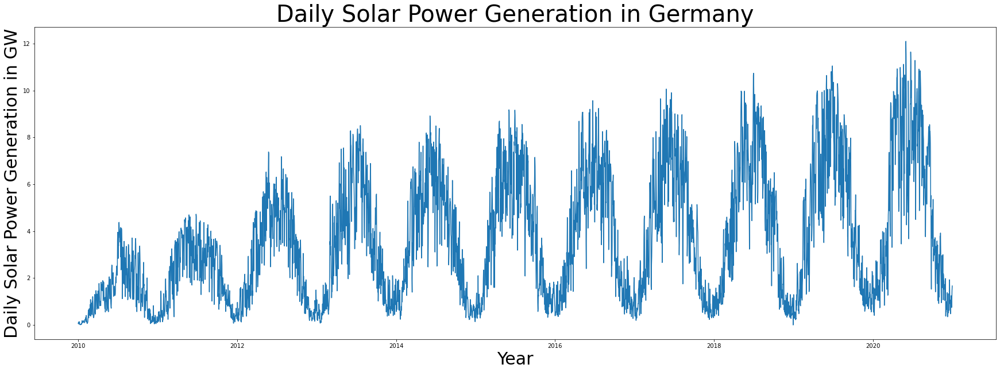
Distribution of the data
Let us take a look at the distribution of daily power generation.
sns.displot(daily_df['all'], kde=True)
plt.xlabel('U')
plt.savefig('datadistr.png')
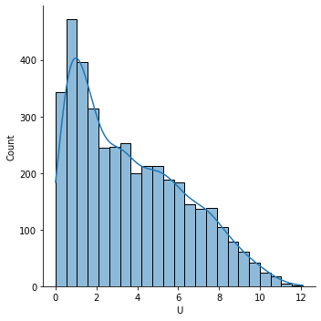
We can see that the distribution is skewed to the left. Since we will later apply a linear regression, we would prefer data that is approximately normally distributed. To shift our distribution, we apply the following transformation.
First, we apply Min-Max scaling.
$\tilde{U_t}=\frac{U_t-U_{min}}{U_{max}-U_{min}}$
scaler = MinMaxScaler()
scaled = scaler.fit_transform(daily_df['all'].to_numpy().reshape(-1, 1))
epsilon = 0.1
scaled[scaled==0]=epsilon
scaled[scaled==1]=1-epsilon
Then, we apply a logit normal transformation to the scaled values.
$U^*=\log{\left(\frac{\tilde{U}_t}{1-\tilde{U}_t}\right)}$
transformed = np.log(scaled/(1-scaled))
daily_df['transformed'] = transformed
sns.displot(transformed, kde=True, legend=None)
plt.xlabel('$U^*$')
plt.savefig('transformeddistr.png')
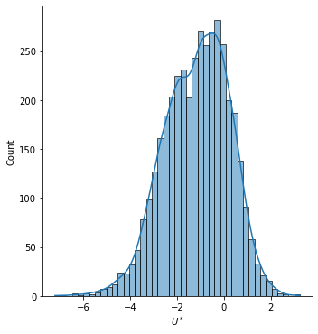
Let us take a look at our transformed time series.
plt.plot(daily_df['transformed'])
[<matplotlib.lines.Line2D at 0x22e1b2926d0>]
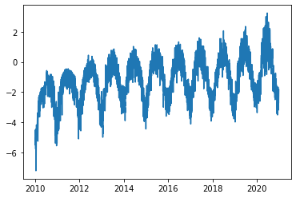
Seasonality
We can see a strong seasonal component in the data. To get rid of it, we apply a linear regression and continue working with its residuals.
After thinking about the underlying process behind the data and experimenting with it, we model our data as following:
$U^*_t = \beta_0 + \beta_1 \cdot t + \beta_2 \cdot \sqrt[4]t \cos \left(2\pi \frac{t-11}{365}\right)+X_t$
- $\beta_0$ is the intercept.
- $\beta_1$ is a linear time coefficient. The behind it is that the amount of solar panels increases steadily over time.
- $\beta_2$ models seasonality. The cosine term describes the yearly seasonality, as power generation heavily depends on natural seasons. The wave is shifted by 11 days. That is because winter solstice is exactly 11 days before New Year. Furthermore, we scale seasonal component by the fourth square-root of time, as a non-linear development of solar energy plants comes into play.
We will use the scikit-learn library for implementation. To get more more information about the regression, we will also conduct it using the statsmodels library and print the model summary.
def get_seasonal_component(timeseries):
time = np.arange(len(timeseries))
x_vals = np.array((time, (time**0.25*np.cos(2*np.pi*(time+11)/365)))).T
lm = LinearRegression().fit(x_vals, timeseries)
print(f'Intercept: {lm.intercept_}')
print(f'Coefficients: {lm.coef_}')
print(f'R-squared: {lm.score(x_vals, timeseries)}')
return lm.predict(x_vals)
time = np.arange(len(transformed))
x_vals = np.array((time, (time**0.25*np.cos(2*np.pi*(time+11)/365)))).T
model = sm.OLS(transformed, sm.add_constant(x_vals))
results = model.fit()
results.summary()
| Dep. Variable: | y | R-squared: | 0.724 |
|---|---|---|---|
| Model: | OLS | Adj. R-squared: | 0.724 |
| Method: | Least Squares | F-statistic: | 5272. |
| Date: | Sun, 07 Aug 2022 | Prob (F-statistic): | 0.00 |
| Time: | 12:57:19 | Log-Likelihood: | -4394.5 |
| No. Observations: | 4018 | AIC: | 8795. |
| Df Residuals: | 4015 | BIC: | 8814. |
| Df Model: | 2 | ||
| Covariance Type: | nonrobust |
| coef | std err | t | P>|t| | [0.025 | 0.975] | |
|---|---|---|---|---|---|---|
| const | -2.0841 | 0.023 | -91.413 | 0.000 | -2.129 | -2.039 |
| x1 | 0.0005 | 9.83e-06 | 46.923 | 0.000 | 0.000 | 0.000 |
| x2 | -0.2282 | 0.002 | -92.181 | 0.000 | -0.233 | -0.223 |
| Omnibus: | 507.081 | Durbin-Watson: | 0.620 |
|---|---|---|---|
| Prob(Omnibus): | 0.000 | Jarque-Bera (JB): | 1086.897 |
| Skew: | -0.766 | Prob(JB): | 9.62e-237 |
| Kurtosis: | 5.036 | Cond. No. | 4.64e+03 |
Notes:
[1] Standard Errors assume that the covariance matrix of the errors is correctly specified.
[2] The condition number is large, 4.64e+03. This might indicate that there are
strong multicollinearity or other numerical problems.
f = open('ols.tex', 'w')
f.write(results.summary(xname=['beta0', 'beta1', 'beta2']).as_latex())
f.close()
daily_df['seasonality'] = get_seasonal_component(transformed)
daily_df['cleaned'] = daily_df['transformed'] - daily_df['seasonality']
Intercept: [-2.08409933]
Coefficients: [[ 0.00046127 -0.22820751]]
R-squared: 0.7242120048393265
plt.figure(figsize=(15,5))
plt.plot(daily_df['transformed'])
plt.plot(daily_df['seasonality'], c='r', linewidth=3)
plt.legend(['Observed data', 'Regression fit'])
plt.xlabel('Date', fontsize=12)
plt.savefig('seasonality.png')
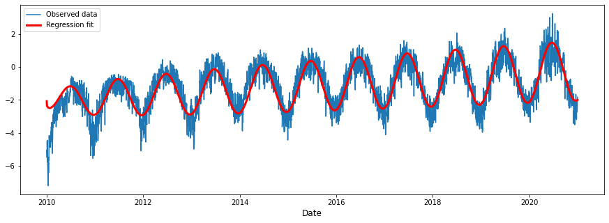
Residuals after regression
plt.plot(daily_df['cleaned'])
plt.title('Residual $X_t$', fontsize=15)
plt.xlabel('Date', fontsize=12)
plt.savefig('afterlm.png')
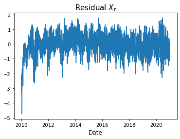
The residuals look good, except in the very beginning. That is no problem, since we can just drop the first year of our data and work with the remaining 10 years.
daily_df = daily_df[365:]
daily_df.head()
| 50Hertz | Amprion | Tennet | Transnet BW | all | transformed | seasonality | cleaned | |
|---|---|---|---|---|---|---|---|---|
| Date | ||||||||
| 2011-01-01 | 0.011042 | 0.022042 | 0.058250 | 0.009917 | 0.101250 | -4.775061 | -2.895385 | -1.879675 |
| 2011-01-02 | 0.024542 | 0.072958 | 0.090208 | 0.035667 | 0.223375 | -3.973572 | -2.892215 | -1.081357 |
| 2011-01-03 | 0.022583 | 0.080875 | 0.066042 | 0.078875 | 0.248375 | -3.865377 | -2.888749 | -0.976628 |
| 2011-01-04 | 0.019125 | 0.089500 | 0.067167 | 0.067958 | 0.243750 | -3.884564 | -2.884988 | -0.999576 |
| 2011-01-05 | 0.051042 | 0.191000 | 0.205750 | 0.106500 | 0.554292 | -3.036477 | -2.880932 | -0.155545 |
We will print the RMSE of our residuals.
rmse = np.linalg.norm(daily_df['cleaned'])/np.sqrt(len(daily_df))
print(f'RMSE of residuals: {rmse.round(4)}')
RMSE of residuals: 0.6584
sns.displot(daily_df['cleaned'], kde=True)
<seaborn.axisgrid.FacetGrid at 0x22e1b7145b0>
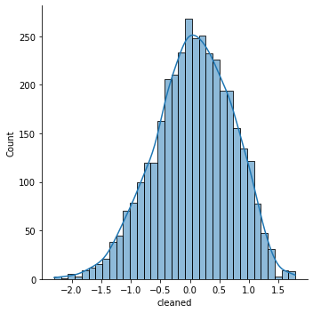
We can see that our residuals are approximately normally distributed.
Time series modelling
Now it is time to work on the time series. First, we inspect its partial autocorrelation.
fig = plot_pacf(daily_df['cleaned'])
plt.xlabel('Lags', fontsize=12)
plt.title('Partial Autocorrelation', fontsize=15)
plt.savefig('pacf.png')
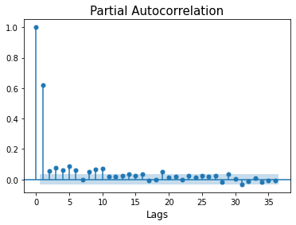
Based on this result, we apply a ARIMA(1,0,1) model.
model = ARIMA(daily_df['cleaned'], order=(1,0,1)).fit()
C:\ProgramData\Anaconda3\lib\site-packages\statsmodels\tsa\base\tsa_model.py:524: ValueWarning: No frequency information was provided, so inferred frequency D will be used.
warnings.warn('No frequency information was'
C:\ProgramData\Anaconda3\lib\site-packages\statsmodels\tsa\base\tsa_model.py:524: ValueWarning: No frequency information was provided, so inferred frequency D will be used.
warnings.warn('No frequency information was'
C:\ProgramData\Anaconda3\lib\site-packages\statsmodels\tsa\base\tsa_model.py:524: ValueWarning: No frequency information was provided, so inferred frequency D will be used.
warnings.warn('No frequency information was'
Again, we give out the residuals after applying the ARIMA model.
rmse = np.linalg.norm(model.resid)/np.sqrt(len(model.resid))
print(f'RMSE of residuals after ARIMA: {rmse.round(4)}')
RMSE of residuals after ARIMA: 0.5124
model.summary()
| Dep. Variable: | cleaned | No. Observations: | 3653 |
|---|---|---|---|
| Model: | ARIMA(1, 0, 1) | Log Likelihood | -2738.148 |
| Date: | Sun, 07 Aug 2022 | AIC | 5484.296 |
| Time: | 12:57:23 | BIC | 5509.109 |
| Sample: | 01-01-2011 | HQIC | 5493.132 |
| - 12-31-2020 | |||
| Covariance Type: | opg |
| coef | std err | z | P>|z| | [0.025 | 0.975] | |
|---|---|---|---|---|---|---|
| const | 0.0593 | 0.025 | 2.338 | 0.019 | 0.010 | 0.109 |
| ar.L1 | 0.6961 | 0.018 | 38.043 | 0.000 | 0.660 | 0.732 |
| ma.L1 | -0.1208 | 0.024 | -5.031 | 0.000 | -0.168 | -0.074 |
| sigma2 | 0.2621 | 0.006 | 43.612 | 0.000 | 0.250 | 0.274 |
| Ljung-Box (L1) (Q): | 0.14 | Jarque-Bera (JB): | 95.96 |
|---|---|---|---|
| Prob(Q): | 0.71 | Prob(JB): | 0.00 |
| Heteroskedasticity (H): | 1.20 | Skew: | -0.37 |
| Prob(H) (two-sided): | 0.00 | Kurtosis: | 3.30 |
Warnings:
[1] Covariance matrix calculated using the outer product of gradients (complex-step).
f = open('arma.tex', 'w')
f.write(model.summary().as_latex())
f.close()
plt.figure(figsize=(30,10))
# plt.plot(predictions, c='g')
plt.plot(daily_df['cleaned'], c='b')
plt.plot(model.fittedvalues, c='r')
plt.title('Model fit over the whole timespan', fontsize=25)
plt.xlabel('Date', fontsize=18)
plt.legend(['Observed data', 'Model fit'], fontsize=15)
plt.savefig('armafitall.png')
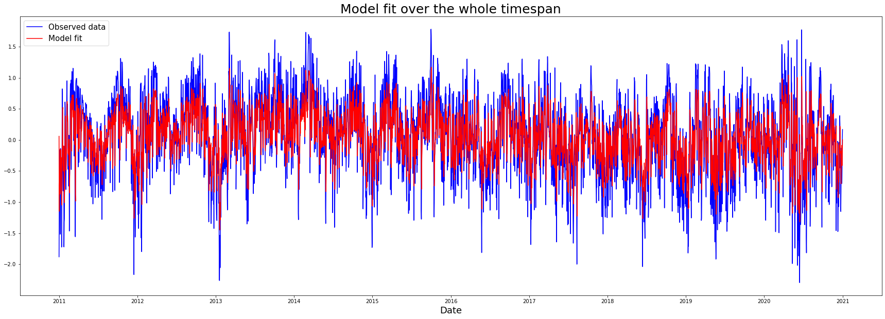
plt.figure(figsize=(30,10))
daily_df['arma_fit'] = model.fittedvalues
# plt.plot(predictions, c='g')
plt.plot(daily_df['cleaned'].iloc[365:365*2], c='b')
plt.plot(daily_df['arma_fit'].iloc[365:365*2], c='r')
plt.title('Model fit in 2012', fontsize=25)
plt.xlabel('Date', fontsize=18)
plt.legend(['Observed data', 'Model fit'], fontsize=15)
plt.savefig('armafit1year.png')
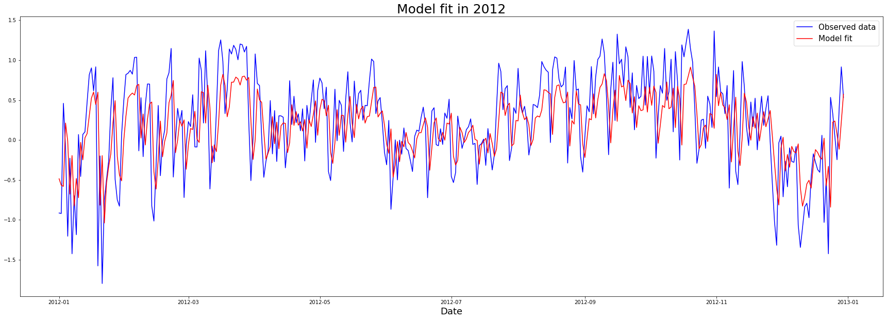
The statsmodels library returns four plots that describe the model fit.
fig = plt.figure(figsize=(20,20))
a = model.plot_diagnostics(fig=fig)
plt.savefig('residplot.png')
C:\ProgramData\Anaconda3\lib\site-packages\statsmodels\graphics\gofplots.py:993: UserWarning: marker is redundantly defined by the 'marker' keyword argument and the fmt string "bo" (-> marker='o'). The keyword argument will take precedence.
ax.plot(x, y, fmt, **plot_style)
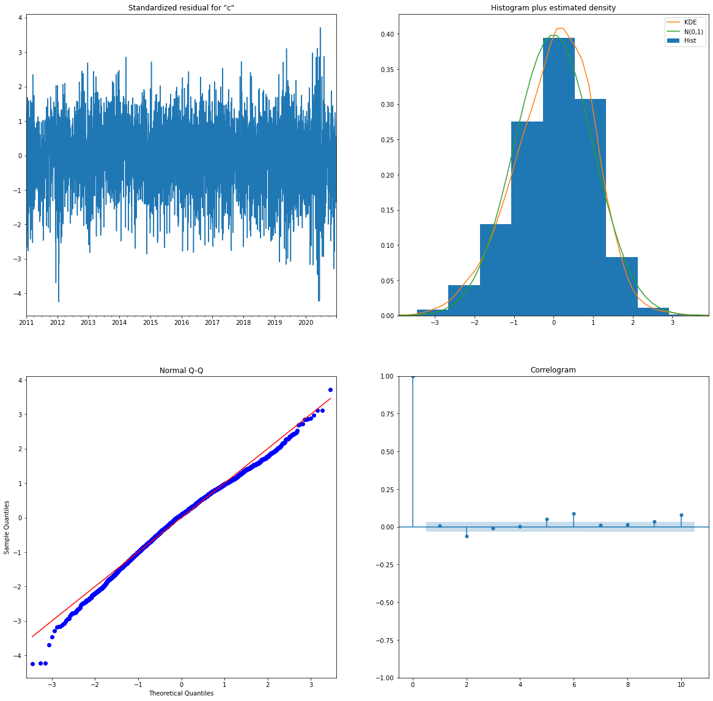
Learnings and outlook
Even with limited knowledge about the underlying process, it is possible
to model seasonality fairly easily. We do not need deep learning but can
resort to a statistical time series model.
The scope of the project was fairly narrow and given more time, the
following steps should be performed:
- Retransformation of the data to its original distribution
- Out-of-sample predictions
- Thorough evaluation of the performance and generality of the model
Additionally, it would be interesting to also forecast power generation in the short term. To do this, one could incorporate different sources, like weather forecasts.